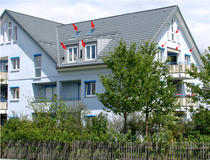

Drucken

| Zimmer |
4,50 |
| Wohnfläche ca. |
136,00 m² |
| Kaltmiete |
2.010,00 EUR |
| Warmmiete |
2.370,00 EUR |
| Zimmer |
4,50 |
| Wohnungstyp |
Erdgeschosswohnung |
| Etage |
0 |
| Etagenanzahl |
2 |
| Schlafzimmer |
3 |
| Badezimmer |
1 |
| Keller |
ja |
| Balkon/Terrasse |
ja |
| Garten/-mitbenutzung |
ja |
| Einbauküche |
ja |
| Objektzustand |
Vollständig renoviert |
| Heizungsart |
Zentralheizung |
| Befeuerungsart |
Öl |
| Bezugsfrei ab |
nach Vereinbarung zwischen 15.09. und 31.10.2009 |
| Garage |
Garage |
| Nebenkosten |
200,00 EUR |
| Heizkosten |
200,00 EUR |
| Heizkosten sind in Nebenkosten enthalten |
ja |
| Garage/Stellplatz-Mietpreis |
50,00 EUR |
| Kaution oder Genossenschaftsanteile |
3 Monatsmieten |
Intelligente Kaution
Provision: 2,38 MM (Nettomiete mit Gge) inkl. MwSt.
Objektbeschreibung
4 1/2-Zimmer-Luxus-Villenetage mit ca. 136 m² Wohnfläche und eigenem Parkgrundstück
Ausstattung:
Das Dreifamilienhaus wurde in den 50er Jahren gebaut und 1997 komplett saniert und umgebaut.
Große überdachte Terrasse zur Westseite und große Terrasse zur Südseite
ca. 400 m² eigener Garten zur Südseite
überdurchschnittliche Raumhöhe
in allen Räumen hochwertiger Parkettboden, z.T. Fischgrät
hochwertige Fenster
exklusive Einbauküche mit Gaggenau-Geräten, Granitarbeitsplatte und Eßplatz
weiß gefliestes Bad mit Fenster
sep. WC mit Fenster
Öl-Zentralheizung
abgeschlossener Kellerraum
Wasch- und Trockenraum im Haus
Lage
Das architektonisch ansprechende Haus befindet sich in bevorzugter und ruhiger Lage von München-Solln.
Die exklusive Wohnung liegt im Erdgeschoss eines Dreifamilienhauses.
Wenige Gehminuten zur Bus-Haltestelle mit Verbindung zur U-Bahn-Haltestelle "Aidenbachstraße".
Das Ortszentrum mit Einkaufsmöglichkeiten ist zu Fuß erreichbar.
Umgebungskarte ansehen
Sonstiges
Anfrage bitte mit vollständiger Anschrift und Rufnummer.